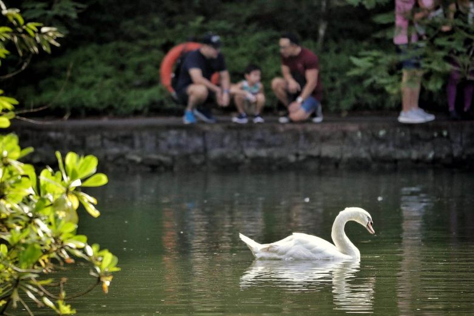
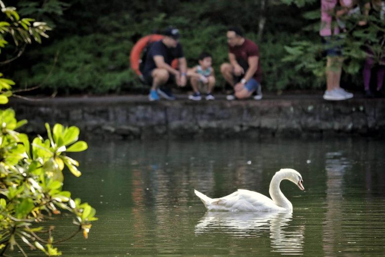
The Singapore Botanic Gardens is the first UNESCO Heritage Site in Singapore, with more than 150 years of history, the 82-hectare Gardens is an interesting and significant place in the history of Singapore and the region. Situated just five minutes away from Orchard Road, the Singapore Botanic Gardens is a lush sanctuary in the heart of the city. It is open daily from 5am to 12mn, making it a perfect location for Singaporeans to experience fun outdoors!
 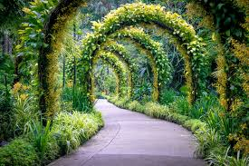
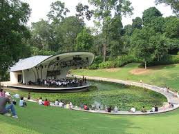
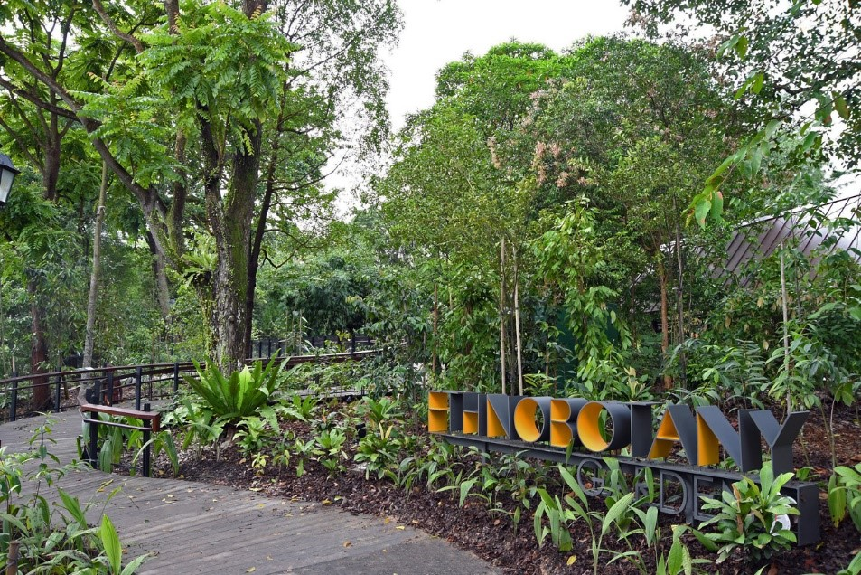
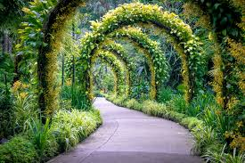
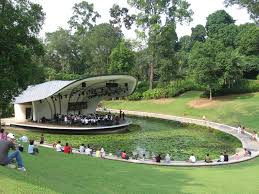
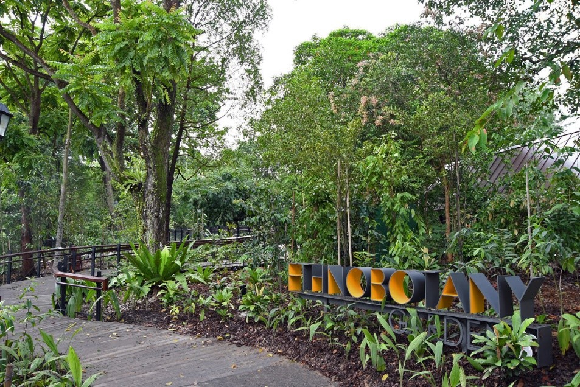
The Gardens has been developed along a Four-Core Concept. This Four-Core concept not only retains old favourites of the historic Gardens, but also caters to tourist and children of various ages. Each Core provides an exciting array of attractions, allowing visitors to stroll around the Gardens and enjoy the beautiful sights and sounds the luscious greenery has to offer.
(map of the Singapore Botanic Gardens)From the Tanglin Entrance, there are various attractions that could catch your eye! The Bandstand used to be the highest point at the Tanglin Core site. Today, it is surrounded by a ring of Yellow Rain Trees (Samanea Saman) making it an iconic landmark of the Gardens. Another attraction here is the famous Swan Lake, constructed in 1866, it is considered to be the oldest ornamental water-feature in Singapore. Home to numerous species of aquatic plants and fishes, the swan lake is named as such due to the pair of beautiful mute swans from Amsterdam. Looking for more activities? There are various Hands-On Workshops for gardening and cultivating plants.
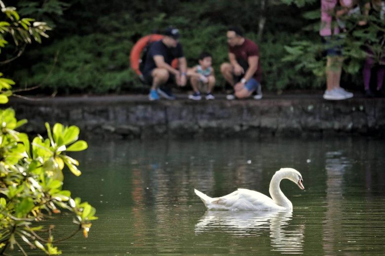
Central Core
Through the Nassim Entrance, this Core consists of a Visitor Centre that showcases Southeast Asian architecture and an Evolution Garden that brings you back into time. From the fiery beginnings of our plant to the first living organisms, this 1.5-hectare garden offers displays designed to enrich and educate.
 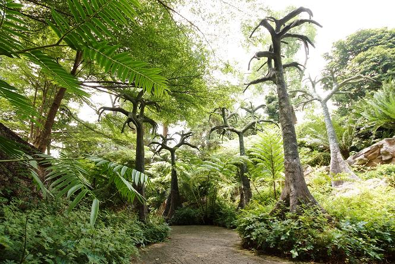
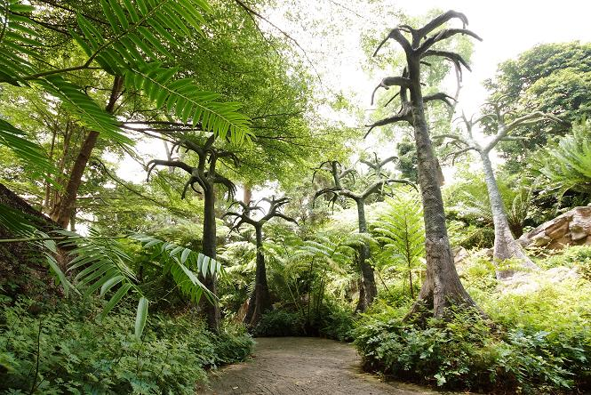
Educational Zone
Located by the Bukit Timah Entrance, visitors will be able to appreciate our newest addition, the Ethnobotany Garden. The outdoor Garden comprises of 4 zones - Living, Craft and Construction, Symbolism and Medicinal. Visitors can learn about the various plants in each zones. Besides that, the Jacob Ballas Children's Garden is Asia's first Children's Garden allowing for children to learn about the importance of plants while having fun. It is a complete nature-learning environment where children can delve deeper into the ecology of plants through experiential learning.
Tyersall Gallop Core
Via the Tyersall Gallop Entrance, visitors will experience the latest Learning Forest which was designed to integrate with the Gardens' existing rain forest! Featuring a network of boardwalks and elevated walkways, visitors can explore habitats ranging from freshwater forest wetland to a lowland rainforest. Adding on, there is a National Orchid Garden that has over 1000 species and 2000 hybrids on display.
 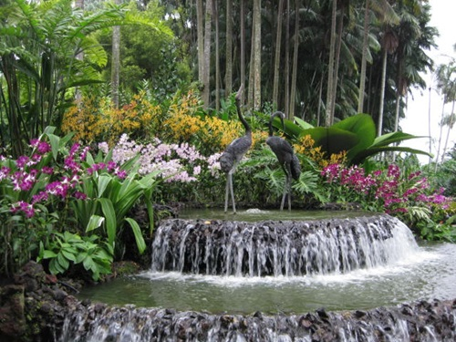
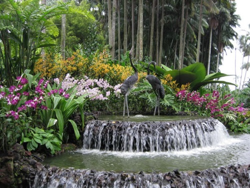
Tours
Looking for someone to bring you around whilst imparting more knowledge about the Gardens? Take a look at our wide variety of Guided Tours that occur every weekend (Saturdays, except 5th Saturday of the month). Selected tours are free, others range between $5 - $15, some of which are:
Events
There are various events that take place in the Singapore Botanic Gardens that cater to all age groups, from children to adults!
Some of which include: